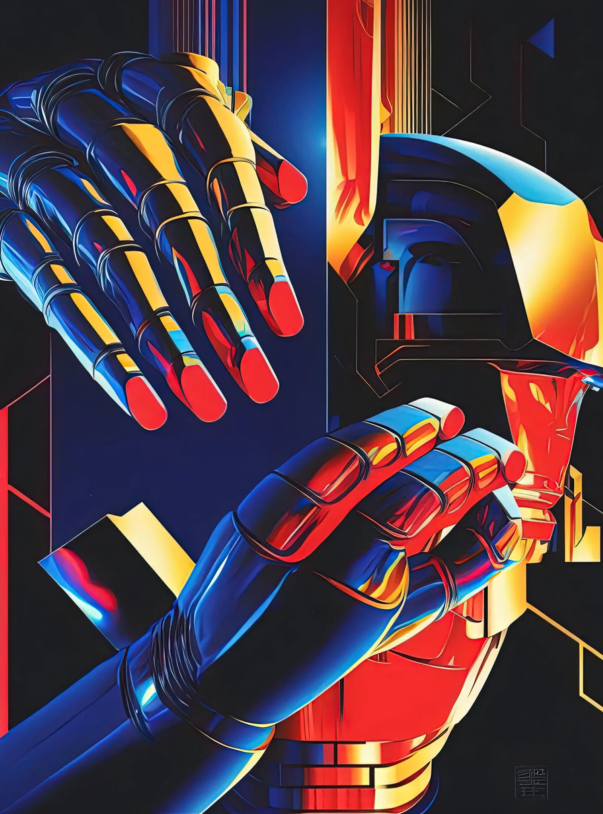
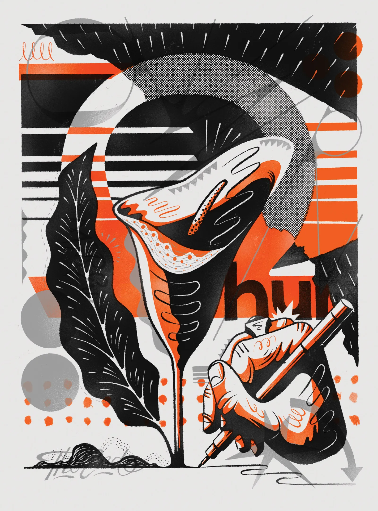
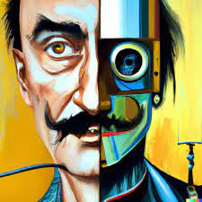

Picture Lee Unkrich, one of Pixar’s most distinguished animators, as a seventh grader. He’s staring at an image of a train locomotive on the screen of his school’s first computer. Wow, he thinks. Some of the magic wears off, however, when Lee learns that the image had not appeared simply by asking for “a picture of a train.” Instead, it had to be painstakingly coded and rendered—by hard-working humans. Now picture Lee 43 years later, stumbling onto DALL-E, an artificial intelligence that generates original works of art based on human-supplied prompts that can literally be as simple as “a picture of a train.” As he types in words to create image after image, the wow is back. Only this time, it doesn’t go away. “It feels like a miracle,” he says. “When the results appeared, my breath was taken away and tears welled in my eyes. It’s that magical.
Our machines have crossed a threshold. All our lives, we have been reassured that computers were incapable of being truly creative. Yet, suddenly, millions of people are now using a new breed of AIs to generate stunning, never-before-seen pictures. Most of these users are not, like Lee Unkrich, professional artists, and that’s the point: They do not have to be. Not everyone can write, direct, and edit an Oscar winner like Toy Story 3 or Coco, but everyone can launch an AI image generator and type in an idea. What appears on the screen is astounding in its realism and depth of detail. Thus the universal response: Wow. On four services alone—Midjourney, Stable Diffusion, Artbreeder, and DALL-E—humans working with AIs now cocreate more than 20 million images every day. With a paintbrush in hand, artificial intelligence has become an engine of wow. Because these surprise-generating AIs have learned their art from billions of pictures made by humans, their output hovers around what we expect pictures to look like. But because they are an alien AI, fundamentally mysterious even to their creators, they restructure the new pictures in a way no human is likely to think of, filling in details most of us wouldn’t have the artistry to imagine, let alone the skills to execute. They can also be instructed to generate more variations of something we like, in whatever style we want—in seconds. This, ultimately, is their most powerful advantage: They can make new things that are relatable and comprehensible but, at the same time, completely unexpected. So unexpected are these new AI-generated images, in fact, that—in the silent awe immediately following the wow—another thought occurs to just about everyone who has encountered them: Human-made art must now be over. Who can compete with the speed, cheapness, scale, and, yes, wild creativity of these machines? Is art yet another human pursuit we must yield to robots? And the next obvious question: If computers can be creative, what else can they do that we were told they could not? I have spent the past six months using AIs to create thousands of striking images, often losing a night’s sleep in the unending quest to find just one more beauty hidden in the code. And after interviewing the creators, power users, and other early adopters of these generators, I can make a very clear prediction: Generative AI will alter how we design just about everything. Oh, and not a single human artist will lose their job because of this new technology.
Our machines have crossed a threshold. All our lives, we have been reassured that computers were incapable of being truly creative. Yet, suddenly, millions of people are now using a new breed of AIs to generate stunning, never-before-seen pictures. Most of these users are not, like Lee Unkrich, professional artists, and that’s the point: They do not have to be. Not everyone can write, direct, and edit an Oscar winner like Toy Story 3 or Coco, but everyone can launch an AI image generator and type in an idea. What appears on the screen is astounding in its realism and depth of detail. Thus the universal response: Wow. On four services alone—Midjourney, Stable Diffusion, Artbreeder, and DALL-E—humans working with AIs now cocreate more than 20 million images every day. With a paintbrush in hand, artificial intelligence has become an engine of wow. Because these surprise-generating AIs have learned their art from billions of pictures made by humans, their output hovers around what we expect pictures to look like. But because they are an alien AI, fundamentally mysterious  even to their creators, they restructure the new pictures in a way no human is likely to think of, filling in details most of us wouldn’t have the artistry to imagine, let alone the skills to execute. They can also be instructed to generate more variations of something we like, in whatever style we want—in seconds. This, ultimately, is their most powerful advantage: They can make new things that are relatable and comprehensible but, at the same time, completely unexpected. So unexpected are these new AI-generated images, in fact, that—in the silent awe immediately following the wow—another thought occurs to just about everyone who has encountered them: Human-made art must now be over. Who can compete with the speed, cheapness, scale, and, yes, wild creativity of these machines? Is art yet another human pursuit we must yield to robots? And the next obvious question: If computers can be creative, what else can they do that we were told they could not? I have spent the past six months using AIs to create thousands of striking images, often losing a night’s sleep in the unending quest to find just one more beauty hidden in the code. And after interviewing the creators, power users, and other early adopters of these generators, I can make a very clear prediction: Generative AI will alter how we design just about everything. Oh, and not a single human artist will lose their job because of this new technology.
Scientists now at Google invented the diffusion computational models that are at the core of image generators today, but the company has been so concerned about what people might do with them that it still has not opened its own  experimental generators, Imagen and Parti, to the public. (Only employees can try them, and with tight guidelines on what can be requested.) It is no coincidence, then, that the three most popular platforms for image generators right now are three startups with no legacy to protect. Midjourney is a bootstrapping startup launched by David Holz, who based the generator in an emerging community of artists. The interface to the AI is a noisy Discord server; all the work and prompts were made public from the start. DALL-E is a second-gen product of the nonprofit OpenAI, funded by Elon Musk and others. Stable Diffusion appeared on the scene in August 2022, created by Emad Mostaque, a European entrepreneur. It’s an open source project, with the added benefit that anyone can download its software and run it locally on their own desktop. More than the others, Stable Diffusion has unleashed AI image generators into the wild.
Why are so many people so excited to play with these AIs? Many images are being created for the same reason that humans have always made most art: because the images are pretty and we want to look at them. Like flames in a campfire, the light patterns are mesmerizing. They never repeat themselves; they surprise, again and again. They depict scenes no one has witnessed before or can even imagine, and they are expertly composed. It’s a similar pleasure to exploring a video game world, or paging through an art book. There is a real beauty to their creativity, and we stare much in the way we might appreciate a great art show at a museum. In fact, viewing a parade of generated images is very much like visiting a personal museum—but in this case, the walls are full of art we ask for. And the perpetual novelty and surprise of the next image hardly wanes. Users may share the gems they discover, but my guess is that 99 percent of the 20 million images currently generated each day will only ever be viewed by a single human—their cocreator. Like any art, the images can also be healing. People spend time making strange AI pictures for the same reason they might paint on Sundays, or scribble in a journal, or shoot a video. They use the media to work out something in their own lives, something that can’t be said otherwise. I’ve seen images depicting what animal heaven might look like, created in response to the death of a beloved dog
Why are so many people so excited to play with these AIs? Many images are being created for the same reason that humans have always made most art: because the images are pretty and we want to look at them. Like flames in a campfire, the light patterns are mesmerizing. They never repeat themselves; they surprise, again and again. They depict scenes no one has witnessed before or can even imagine, and they are expertly composed. It’s a similar pleasure to exploring a video game world, or paging through an art book. There is a real beauty to their creativity, and we stare much in the way we might appreciate a great art show at a museum. In fact, viewing a parade of generated images is very much like visiting a personal museum—but in this case, the walls are full of art we ask for. And the perpetual novelty and surprise of the next image hardly wanes. Users may share the gems they discover, but my guess is that 99 percent of the 20 million images currently generated each day will only ever be viewed by a single human—their cocreator. Like any art, the images can also be healing. People spend time making strange AI pictures for the same reason they might paint on Sundays, or scribble in a journal, or shoot a video. They use the media to work out something in their own lives, something that can’t be said otherwise. I’ve seen images depicting what animal heaven might look like, created in response to the death of a beloved dog